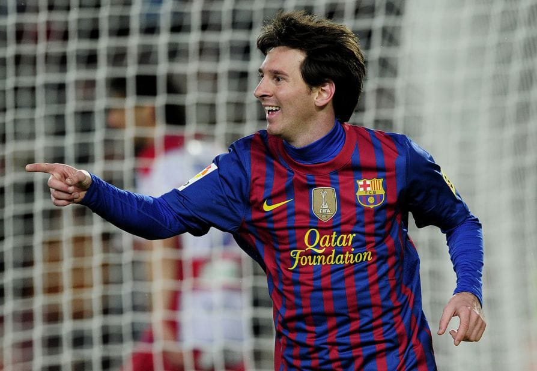

No universo do futebol, há nomes que transcenderam o jogo para se tornarem lendas vivas, e entre esses ícones está Lionel Messi. No ano de 2012, Messi não apenas consolidou seu status como um dos maiores jogadores de todos os tempos, mas também elevou o jogo a novas alturas com seu desempenho extraordinário e conquistas notáveis.
Em 2012, Lionel Messi não apenas recebeu o prêmio de Bola de Ouro da FIFA pela quarta vez consecutiva, mas também o fez de forma incontestável.
Sua consistência ao longo do ano, tanto em nível de clube quanto internacional, o destacou como o jogador mais influente e talentoso do mundo na época.
A conquista da Bola de Ouro foi um reconhecimento merecido de seu talento extraordinário e de seu impacto inegável no cenário do futebol mundial.
Um dos momentos mais marcantes de 2012 para Lionel Messi foi quando ele estabeleceu um novo recorde mundial ao marcar 91 gols em um único ano civil.
Esse feito notável não apenas superou a marca anterior de Gerd Müller, mas também demonstrou a capacidade excepcional de Messi de encontrar o fundo da rede repetidamente, independentemente do desafio.
Cada gol não era apenas um número, mas sim uma obra-prima de habilidade, criatividade e instinto de artilheiro que deixou o mundo do futebol em admiração.
Lionel Messi brilhou na UEFA Champions League em 2012, liderando o Barcelona em uma campanha notável.
Messi foi o artilheiro da Champions League na temporada 2011-2012, contribuindo com gols vitais que ajudaram o Barcelona a avançar para as fases finais do torneio.
Um dos destaques memoráveis foi sua notável exibição contra o Bayer Leverkusen, onde Messi marcou cinco gols em uma única partida.
Um dos momentos mais marcantes foi sua atuação na semifinal contra o Chelsea, onde apesar de seus esforços, o Barcelona foi eliminado. Mesmo perdendo um pênalti decisivo, Messi foi impressionante nos dois jogos, demonstrando sua classe com habilidade, visão de jogo e tentativas de gol que mantiveram os torcedores à beira de seus assentos.
Desempenho de Messi na La Liga.

Na La Liga, Messi foi igualmente impressionante, liderando o Barcelona em uma luta acirrada pelo título espanhol.
Messi terminou a temporada como artilheiro da La Liga, demonstrando sua consistência excepcional e seu impacto inegável em cada partida.
Seu desempenho na La Liga em 2012 solidificou ainda mais sua reputação como um dos maiores jogadores da história do campeonato espanhol.
O ano de 2012 foi verdadeiramente o auge da carreira de Messi até aquele momento, marcando um capítulo inesquecível na história do futebol. Seus feitos extraordinários não só o elevaram ao status de lenda viva do esporte, mas também inspiraram uma geração de jogadores e fãs.